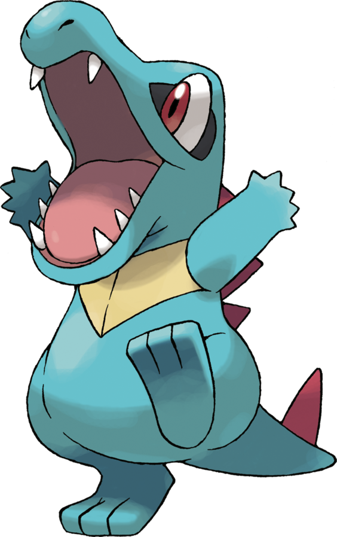

Si je t'ai appelé c'est pour une mission de la plus haute importance: remplir le Pokédex des Îles Sevii, une région encore inexplorée jusqu'ici. N'ayant plus l'âge pour voyager aussi loin, je te confie la tâche d'y aller à ma place.
Ta mission
Les Îles Sevii
Les Îles Sevii sont un archipel situé au sud de la région de Kanto, constitué de 7 îles principales aux caractéristiques variées. Cette diversité écologique fait que de nombreuses espèces différentes de Pokémon se sont installés sur ces îles.
Cependant, l'archipel ne contient aucune grande ville à proprement parler, seulement des petites bourgades. De plus, l'usage de bateaux sera nécéssaire pour voyager entre les différentes îles. Attends-toi à un environnement sauvage, potentiellement hostile!
Ton partenaire
Pour t'aider dans ta mission, je t'enverrai un partenaire Pokémon pour faire face aux potentiels dangers que tu rencontreras.
J'ai à ma disposition 3 Pokémons qui pourraient t'accompagner. Malheureusement je ne peux t'en donner qu'un seul alors choisit bien.
 |
 |
 |
|---|---|---|
| Arcko | Salamèche | Kaiminus |
| Arcko est doté de petits crochets sous les pattes, ce qu'il lui permet de grimper aux murs. Ce Pokémon attaque en frappant ses ennemis avec son épaisse queue. | La flamme qui brûle au bout de sa queue indique l'humeur de ce Pokémon. Elle vacille lorsque Salamèche est content. En revanche, lorsqu'il s'énerve, la flamme prend de l'importance et brûle plus ardemment. | Malgré son tout petit corps, la mâchoire de Kaiminus est très puissante. Parfois, ce Pokémon mordille les gens pour jouer, sans se rendre compte que sa morsure peut gravement blesser quelqu'un. |